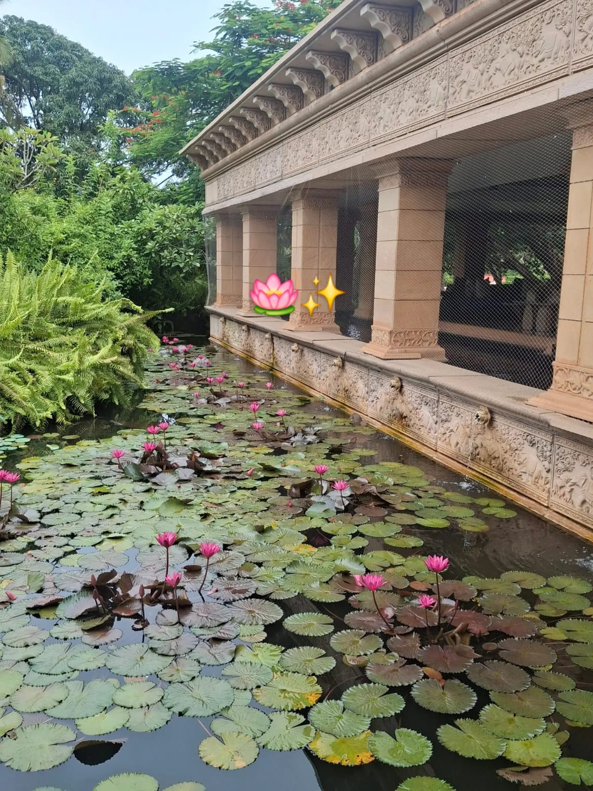
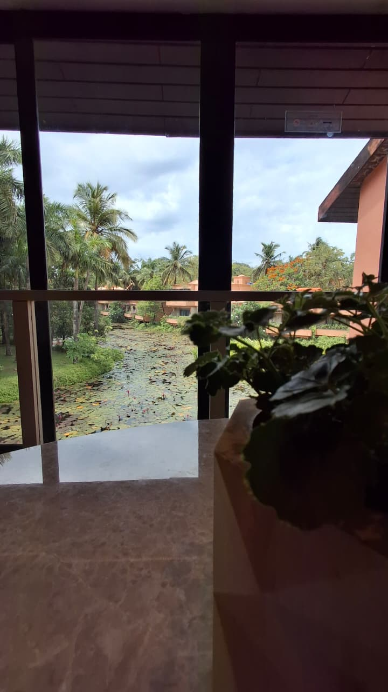
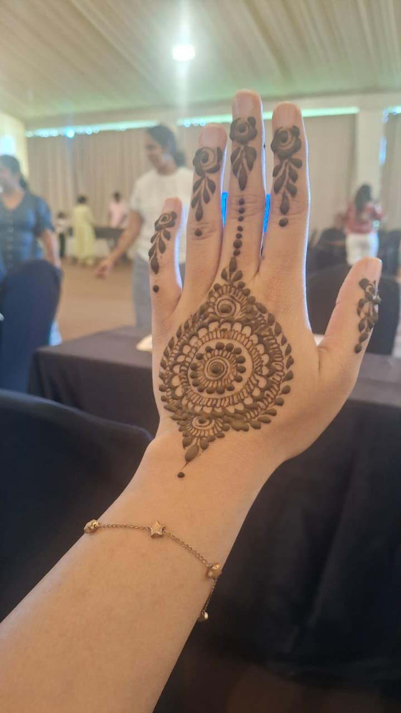
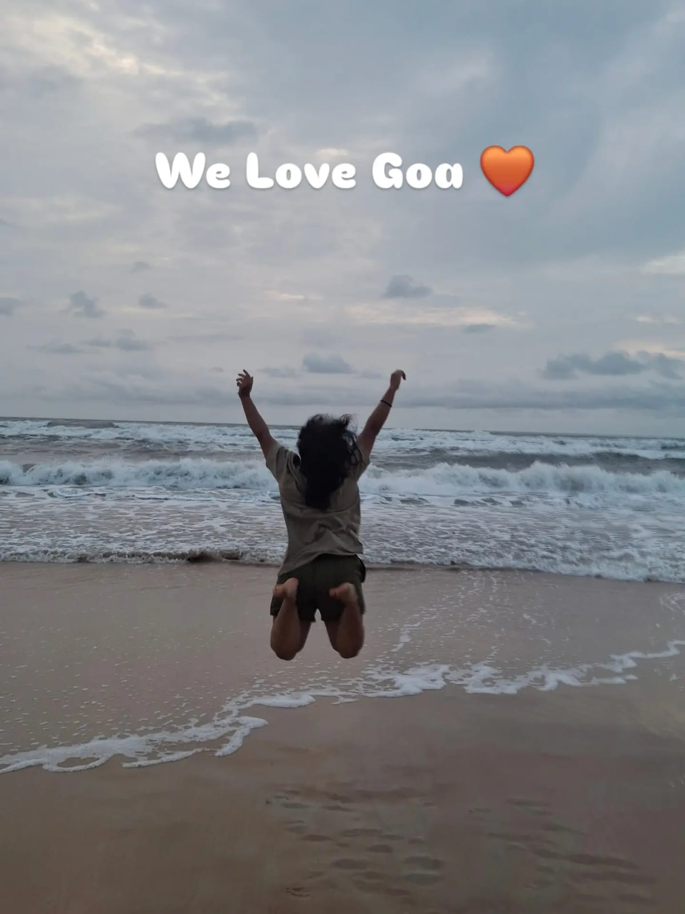
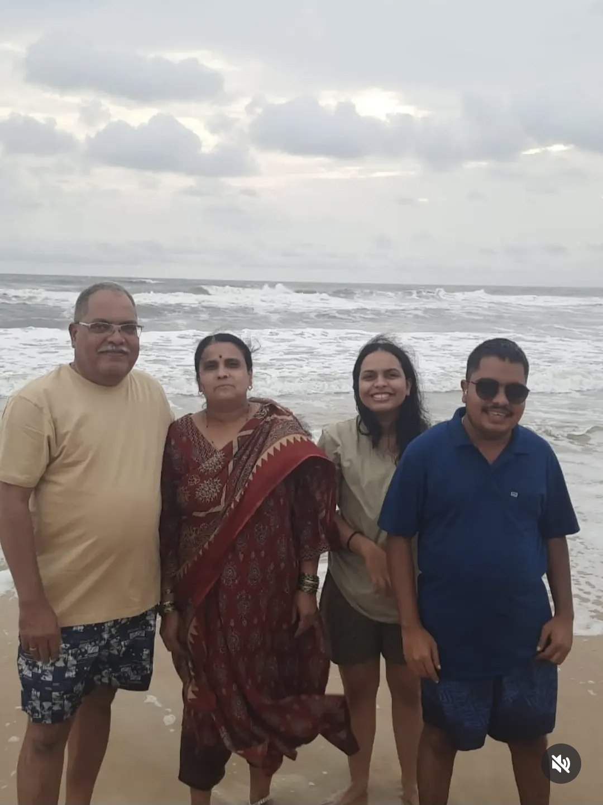
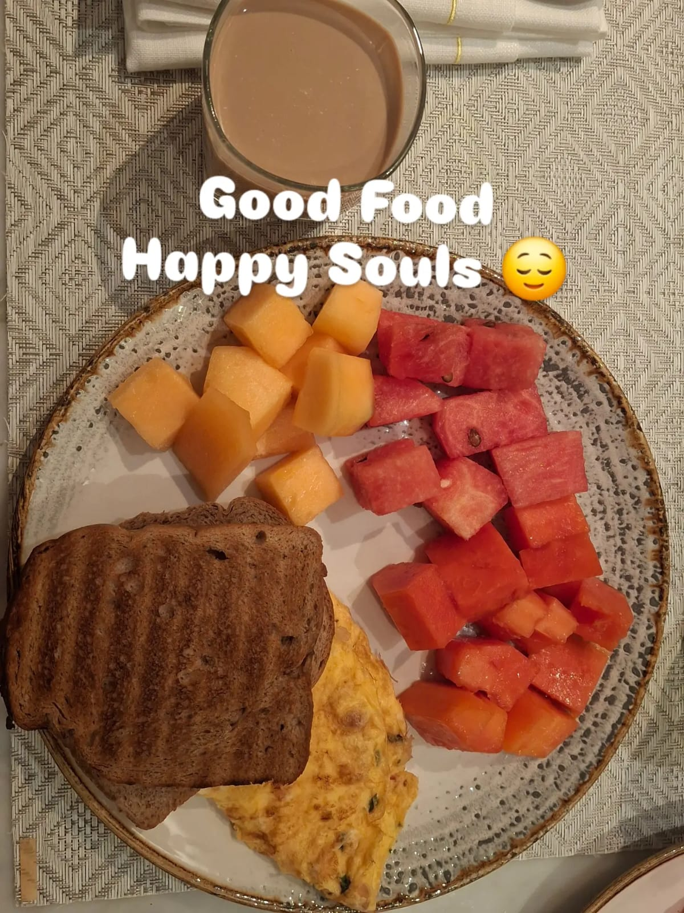
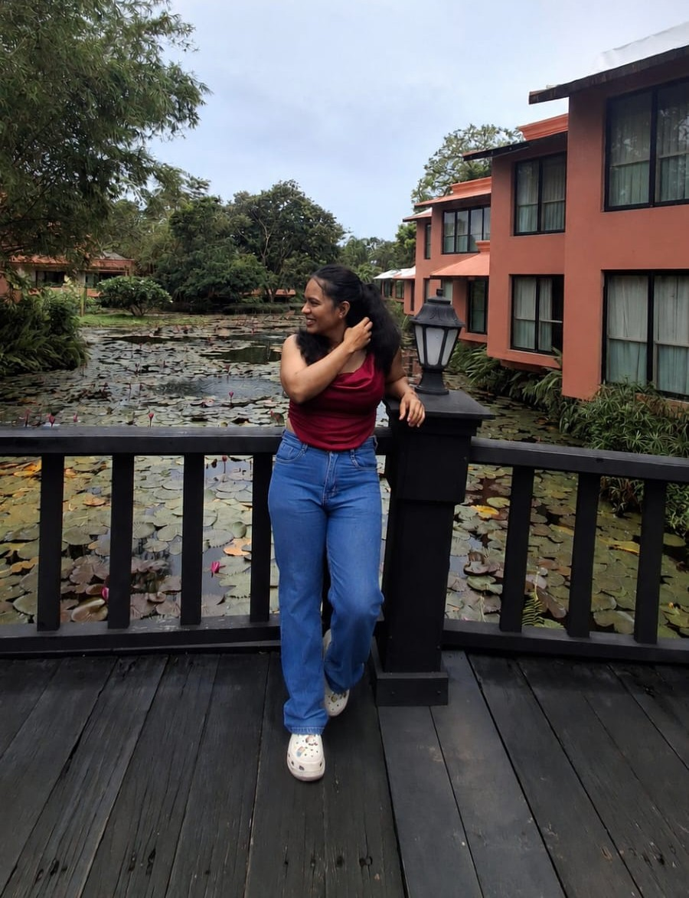
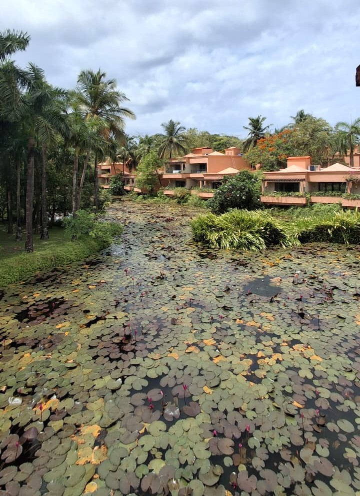

Arrival — Check-In, Comedy, and a DJ Night to Remember
We pulled up to The St. Regis Goa Resort a little after 2 pm, the drive behind us a warm blur of highway and anticipation. My parents, my two younger brothers, and I stepped into the lobby and that unmistakable five-star cool washed over us — white linen, the faint scent of tropical flowers, staff who seemed to glide rather than walk. Having the whole family along made the moment feel extra special; these trips are something my company arranges every June for its team, and this year I got to share it with the people I love most.
After freshening up and catching our breath, the evening unfolded in the best possible way. A mimicry artist took the stage and had the entire crowd howling — the kind of act where you're laughing so hard your cheeks hurt. Then a live band picked up the energy, and before anyone had time to think, a DJ took over and turned the night into something else entirely. I danced on Bollywood songs with my teammates until well past 2 am, the bass bouncing off palm trees and sea-scented air.
// the property


// the moment Dancing to Bollywood hits with my teammates at 1 am, the Arabian Sea somewhere in the dark beyond, I remember thinking — this is exactly what a good year feels like. — Shweta Suryavanshi
Day Two — Roller Coasters, Mehndi, the Beach, and Mafia at Midnight
The second day was the heart of the trip. The morning kicked off with our team activity: we had to build a fully working roller coaster from scratch. I threw myself into the poster-making and decoration corner — cutting, colouring, arranging — while other teammates tackled the structure. Watching the whole thing come together, actually functional and actually thrilling, was one of those rare moments where you see your colleagues in a completely different light. Problem-solvers, artists, engineers, cheerleaders — all at once.
The afternoon turned quieter and more personal. I got mehndi done, the intricate patterns inching up my hands while I chatted and let the afternoon slow down. Then nail art, then a dip in the pool. By early evening we headed to the beach. The Arabian Sea in June has this heavy, moody quality to it — the pre-monsoon swell, the steel-blue water, the sky feeling closer than usual. I clicked a few pictures with family, just absorbing the fact that we were all here, together, in one of India's most beautiful spots.
// mehndi, beach & pool day



Night two ended — or really, began — with a long, chaotic, utterly joyful game of Mafia. The lying, the accusations, the dramatic eliminations — it went till 2 am again. There is something about a shared game in the middle of the night, in a place far from your regular life, that strips away the professional polish and just leaves people. Real, funny, imperfect, brilliant people. I loved every round of it.
// where the land meets the monsoon sea
// trip highlights
- 🎤 Mimicry comedy show followed by a live band and DJ night till 2 am
- 🎢 Built a fully working roller coaster as a team activity — helped with poster design and decoration
- 💅 Mehndi and nail art session on a slow South Goa afternoon
- 🌊 Beach time with family under pre-monsoon skies — perfect moody light for photos
- 🕵️ Mafia game that stretched to 2 am — the best kind of night
- 🌧 A heavy monsoon drive back through dangerously beautiful mountain ghats
Day Three — Breakfast, Rain, and the Drive Home Through the Ghats
The last morning had that bittersweet flavour every good trip ends with. We got ready at a relaxed pace, gathered around the breakfast table — my family, full plates, unhurried conversation. The St. Regis breakfast is the kind that makes you want to stay another day: spreads that go on forever, warm bread, fresh fruit, coffee that actually tastes like coffee. We loaded up the car, said our goodbyes to the property, and hit the road.
Then the rain arrived. Not a drizzle — a proper monsoon downpour that transformed the ghats into something straight out of a film. The switchbacks disappeared into mist. Waterfalls appeared out of nowhere on both sides of the road, silver threads tumbling down the green hillside. It was genuinely dangerous in the way that beautiful things sometimes are, and I could not stop staring. We drove slowly, carefully, windows slightly fogged, and nobody spoke much — we just watched. That drive, honestly, might be my favourite memory of the whole trip. Nature reminding you, quietly but firmly, that it is the main character.
// last morning at the resort



// when the road gets beautiful & terrifying
// practical info
| Best time to visit | November – February for sun; June–July for dramatic monsoon landscapes |
| Getting there | Road trip by car (scenic route via mountain ghats); Goa also has a domestic airport (GOI) and rail connections |
| Getting around | Rental scooter or cab; car is convenient if travelling with family |
| Stay | The St. Regis Goa Resort by Marriott — private pools, direct beach access, 5-star service |
| Must eat | Fresh seafood at beach shacks; Goan fish curry with rice; bebinca dessert |
| Pro tip | The ghat drive in monsoon is spectacular but take it slow — roads get slippery and visibility drops fast |
// resources & further reading